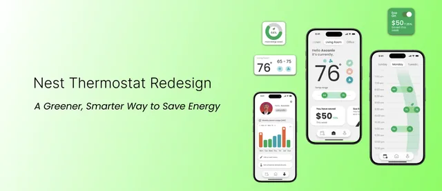
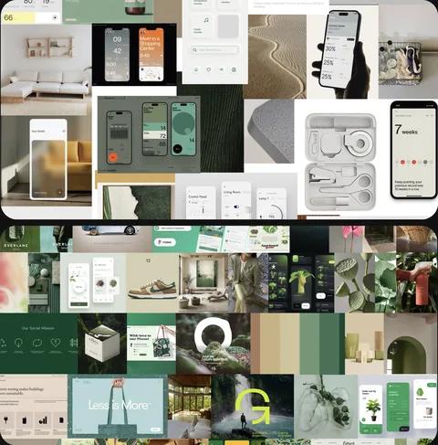
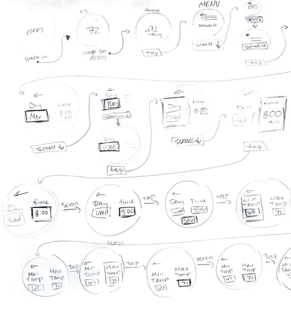
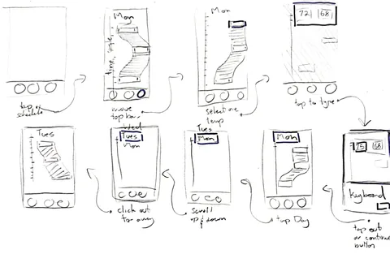
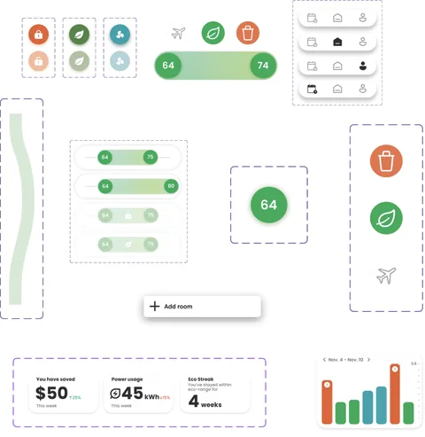
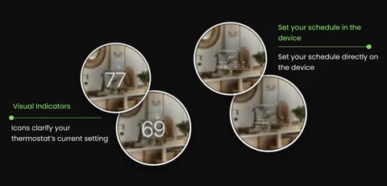
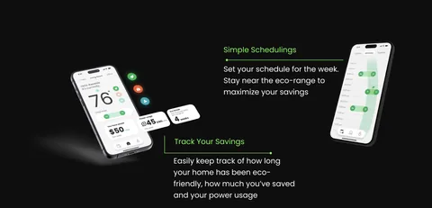
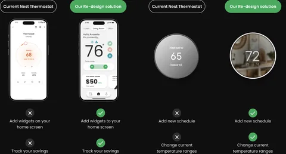

Nest Thermostat Redesign · 10 Week Student Project
A Greener, Smarter Way
to Save Energy
Overview
The Problem
Current thermostat systems on the market often cost more than the average person is willing to spend and do not focus on reducing the environmental impact of heating and cooling systems.
The Solution
Through research and testing, we developed a solution that values the environment, your time, and your money. Setting temperatures that use the least amount of energy and money is as easy as checking the time.
Discovery

Visual Reference Search
We collected 195+ images to establish the visual language of the redesign, narrowing down to 5 key directions that shaped our palette, typography, and aesthetic direction.
Visual Identity & Style Guide
A clear color palette and type system established the eco-conscious, approachable design language used consistently across both products.
DESIGN CHALLENGE
How might we redesign a thermostat to be eco-conscious and budget-friendly, making sustainable temperature control accessible to everyone?
Design
Starting with Low Fidelity
Before any visual decisions, we mapped the core user flows for both the device and companion app in low-fidelity wireframes, focusing purely on structure and logic.


Evolving to Mid Fidelity
Wireframes evolved through iterative feedback, improving hierarchy, clarifying the thermostat state, and restructuring the scheduling system to be more intuitive.
Building the Component Library
With the mid-fidelity flows validated, we moved into building a full component library. This gave us a consistent set of reusable elements across both the device and app, ensuring visual continuity before moving into high fidelity.

Solution
Presenting Nest, Built for Everyone
The Redesigned Device
The redesigned thermostat makes eco-conscious temperature control effortless. Bold visual feedback, refined iconography, and micro-interactions communicate every state change with clarity, all on a compact circular display.

The Companion App
The app extends the thermostat experience, giving users real-time energy savings, eco-mode controls, and scheduling from their phone. Widgets provide instant access without opening the full app.

Before & After
After presenting the final solution, here is a direct comparison of the original Nest against our redesign. The improvements in accessibility, eco-focused features, and visual hierarchy speak for themselves.

Reflection
Designing Beyond the Screen
Designing for a compact physical device taught me to think beyond conventions. Every pixel and line weight had to earn its place.
Cohesion Across Two Products
Building two distinct products that still felt like one family deepened my understanding of design systems and visual consistency.
Accessibility is Non-Negotiable
Balancing accessibility standards with strong aesthetics made contrast ratios and touch targets a natural part of my design process.
That's a wrap
Thanks for reading.
If you have any questions about this project or want to connect, feel free to reach out.